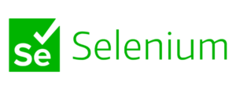
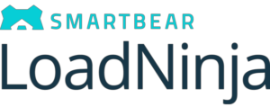
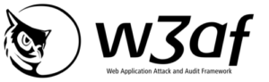

CALIDAD DEL SOFTWARE
¡Bienvenido a nuestro recorrido por el mundo tecnologico! En este viaje, exploraremos cómo la calidad no solo significa "sin errores", sino la garantía de experiencias confiables, eficientes y adaptativas. Descubre cómo la calidad del software influye en la satisfacción del usuario, la productividad del desarrollo y la capacidad de adaptación en un mundo digital en constante cambio.
PRINCIPIOS FUNDAMENTALES
Satisfaccion al cliente
El software debe cumplir con los requisitos del cliente y satisfacer sus necesidades.
Prevención sobre Corrección
Abordar problemas en las primeras etapas del desarrollo en lugar de corregirlos después de que han ocurrido
Enfoque Basado en Procesos
Un enfoque estructurado en los procesos ayuda a mejorar la calidad
Mejora Continua
El proceso de desarrollo de software debe ser continuamente revisado y mejorado. La retroalimentación y la adaptación constante son clave para la mejora continua.
Gestión Integral
La gestión integral implica la participación de todos para garantizar la calidad.
Medición y Control
La recopilación de datos y la monitorización son esenciales para garantizar un proceso de desarrollo controlado y mejorar la calidad.
Enfoque al Usuario
El software debe diseñarse teniendo en cuenta las necesidades y expectativas de los usuarios. La usabilidad y la experiencia del usuario son componentes críticos de la calidad del software
Trabajo en Equipo
El trabajo en equipo efectivo es esencial para producir software de alta calidad. La comunicación y la colaboración entre los miembros del equipo son clave.
Gestión de Cambios
Los cambios en los requisitos o en el código deben gestionarse de manera controlada para evitar la introducción de errores y garantizar la coherencia del sistema.
Documentación Adecuada
La documentación clara y completa es esencial para comprender y mantener el software a lo largo del tiempo.
NORMAS Y ESTANDARES
ISO/IEC 25000 (SQuaRE)
Se centra en la calidad del producto y define características de calidad como funcionalidad, confiabilidad, usabilidad, eficiencia, mantenibilidad y portabilidad.
ISO/IEC 12207
Define procesos clave y actividades a lo largo de las etapas de especificación, diseño, desarrollo, prueba, despliegue y mantenimiento del software.
ISO/IEC 9126 (reemplazada por ISO/IEC 25010)
Se enfocaba en la calidad del software y definía un conjunto de características y subcaracterísticas relacionadas con la calidad, como la funcionalidad, confiabilidad, eficiencia, usabilidad, mantenibilidad y portabilidad.
ISO 12207
Esta norma del Instituto de Ingenieros Eléctricos y Electrónicos (IEEE) proporciona un marco para los procesos del ciclo de vida del software.
ISO 9001
Es una norma de gestión de calidad que se aplica a una amplia gama de industrias, incluida la industria del software. Se centra en la mejora continua y la satisfacción del cliente.
ISO/IEC 27001
Un estándar para la gestión de la seguridad de la información. Aunque no se enfoca específicamente en el desarrollo de software, es relevante para asegurar la seguridad de los sistemas de información que involucran software.
OWASP
Aunque no es una norma oficial, OWASP proporciona una serie de guías y mejores prácticas para abordar la seguridad en el desarrollo de aplicaciones web.

CMMI
Un modelo de mejora de procesos que proporciona directrices para la mejora y evaluación de procesos en la ingeniería de sistemas y el desarrollo de software.
PROCESO DE DESARROLLO Y CALIDAD
La integración de la calidad en los procesos de desarrollo es esencial para asegurar que se cumplan los estándares de calidad en todas las etapas del ciclo de vida del software. Aquí hay una explicación detallada sobre cómo se logra esta integración:

Requisitos Claros y Documentación:
Comprender y documentar claramente los requisitos del cliente es fundamental para establecer la base de un proyecto de calidad.
Gestión de Configuración:
Controlar y documentar adecuadamente los elementos del software a lo largo del tiempo contribuye a la coherencia y la calidad.
Desarrollo Ágil:
La metodología ágil fomenta la calidad a través de ciclos iterativos, retroalimentación continua y adaptabilidad a los cambios.
Pruebas Continuas:
Las pruebas frecuentes y variadas, desde pruebas unitarias hasta pruebas de sistema, son esenciales para garantizar la estabilidad y funcionalidad del software.
Automatización de Procesos:
Automatizar tareas como compilación y pruebas contribuye a la calidad al reducir errores humanos y garantizar ejecuciones consistentes.
Revisiones de Código:
Las revisiones regulares del código por parte de pares de programadores mejoran la calidad al identificar y corregir posibles problemas.
Gestión de Defectos:
Una gestión efectiva de defectos asegura la resolución oportuna de problemas y la mejora continua de la calidad.
Mejora Continua:
La calidad es un objetivo en constante evolución; revisar y mejorar continuamente los procesos es crucial.
Gestión de Cambios:
Gestionar los cambios en requisitos o código evita la introducción de errores y mantiene la calidad a lo largo del tiempo.
Documentación Completa:
Documentar de manera clara y completa, desde el código hasta la documentación técnica, facilita la comprensión y el mantenimiento del software.
Formación y Desarrollo del Equipo:
La capacitación continua y el desarrollo del equipo son fundamentales para mantenerse actualizado con las mejores prácticas y tecnologías emergentes, contribuyendo así a la calidad del trabajo.
LA IMPORTANCIA DE LA CALIDAD
Cuando quieras desarrollar una nueva solución piensa dos y mil veces antes de apurar el desarrollo, en esta sección veremos 7 desastres vergonzosos y peligrosos del mundo del desarrollo de software.
HERRAMIENTAS DE GESTIÓN DE CALIDAD
La gestión de calidad del software es esencial para garantizar que los productos y proyectos cumplan con los estándares y expectativas establecidos. Existen diversas herramientas de gestión de calidad que pueden ayudar en diferentes aspectos del ciclo de vida del desarrollo de software. Aquí te presento algunas herramientas populares en este campo:
Herramientas para pruebas funcionales
SoapUI
SoapUI es una herramienta multiplataforma de código abierto utilizada para pruebas funcionales y no funcionales, ampliamente utilizada en pruebas de servicios web. Admite todos los protocolos y tecnologías estándar para probar todo tipo de API. Su interfaz es muy sencilla lo que facilita el uso tanto a usuarios como a técnicos.
Selenium
Selenium es una popular herramienta de prueba de software de código abierto compatible con la mayoría de los navegadores y sistemas operativos. Ofrece compatibilidad con múltiples lenguajes de programación como Java, JavaScript, Python, C# y más. Permite a los evaluadores automatizar muchos procesos de prueba como pruebas funcionales.
Herramientas de pruebas de rendimiento
LoadRunner
Es una herramienta de prueba de rendimiento de software que permite detectar problemas de rendimiento de los componentes clave de las aplicaciones web. Es muy útil para detectar cuellos de botella en una fase previa a la implementación o despliegue de la aplicación, así como para identificar brechas de rendimiento antes de implementar o actualizar un nuevo sistema.
LoadNinja
LoadNinja es una herramienta para pruebas de rendimiento y carga basada en la nube para aplicaciones y servicios web. Permite verificar si sus servidores web soportan una carga masiva y si los servidores son robustos y escalables.
Herramientas de seguimiento de defectos de código
SonarQube
SonarQube es una herramienta de código abierto para la inspección continua de código. Recopila y analiza el código fuente y proporciona informes sobre la calidad del código de los proyectos. Aborda muchas partes de control de calidad del código como errores de estilo, errores potenciales, defectos de código, duplicación de código, falta de cobertura de prueba y exceso de complejidad.
Herramientas de prueba de APIs
Katalon
Katalon es una herramienta gratuita de automatización de pruebas para sitios web, aplicaciones móviles y servicios web.Es una herramienta gratuita de tecnología KMS pero no de código abierto. Dispone de grabación y reproducción y modo manual para crear casos de prueba de automatización de manera efectiva.
Postman
Postman es un entorno de desarrollo de API que ayuda a los/as desarrolladores/as a crear, probar, documentar, monitorear y publicar documentación para sus API. Puede realizar varios tipos de solicitudes HTTP (GET, POST, PUT, PATCH), guardar entornos para su uso posterior y convertir la API en código para varios idiomas como JavaScript y Python.
Herramientas de pruebas de seguridad
Netsparker
Netsparker es una solución de seguridad en sitios web y API que utiliza una tecnología de escaneo basado en pruebas que verifica automáticamente las vulnerabilidades identificadas al explotarlas de una manera segura y de solo lectura. Se utiliza principalmente para identificar problemas de seguridad de aplicaciones web, como inyecciones SQL o Cross-site Scripting (XSS).
W3af
W3af es una aplicación web de código abierto que se utiliza para el análisis de seguridad. Esta herramienta proporciona un escáner de vulnerabilidades y herramientas de explotación para aplicaciones web. El escáner permite identificar más de 200 vulnerabilidades , incluidas las secuencias de comandos entre sitios, la inyección de SQL o el comando del sistema operativo.
Herramientas de pruebas entre navegadores
Herramientas de pruebas móviles
TestComplete
TestComplete es una plataforma funcional de pruebas automatizadas desarrollada por SmartBear Software. TestComplete permite a los evaluadores crear pruebas automatizadas para aplicaciones de Microsoft Windows, Web, Android (sistema operativo) e iOS. operaciones y se utiliza para la reproducción automatizada y el registro de errores.